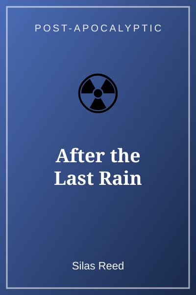
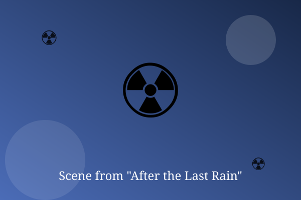

Chapter 1: The Sky Clears

For ten years it had rained ash. On Tuesday morning, Nell woke in the bunker to complete silence.
She climbed the rusty ladder and pushed the hatch open. A thin strip of blue sky sat above the ruins.
She stood there a long time. Then she ran back down the ladder, shouting for everyone to come see.
— End of Chapter —